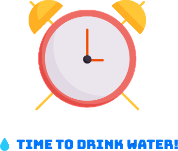

Water Reminder sits quietly in your system tray and pops up a friendly alarm when it's time for a glass. Pick an interval, then get back to work.
No streaks, no charts, no sign-up. Just a timer and a nudge you'll actually notice.
One-tap presets from 15 minutes to 2 hours, or fine-tune anywhere from 1 minute to 8 hours.
When the countdown ends, a friendly alarm pops up in the corner of your screen, with an optional chime. It never steals focus and closes by itself.
Pause for 30 minutes, 1 hour, 2 hours, or until you resume. Timed pauses pick back up by themselves.
Closing the window keeps it running quietly in the system tray. Pause, change the interval or quit from the tray menu.
Optionally launches straight to the tray when you sign in, so you never have to remember to start it.
Download the installer and run it. The settings window opens once so you can set things up.
Choose how often you want a reminder. It starts at every 15 minutes.
It keeps counting in the tray. When it's time, the alarm pops up. Drink, and it starts over.
Pick your platform and grab the latest release. It's free, and the installer includes everything it needs.
The apps aren't code-signed yet. Windows: if SmartScreen warns, click More info → Run anyway. macOS: right-click the app and choose Open the first time.
